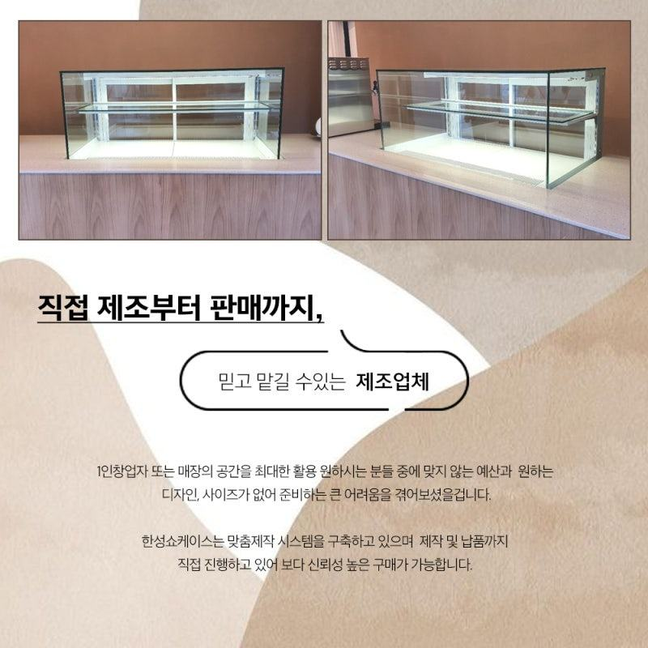
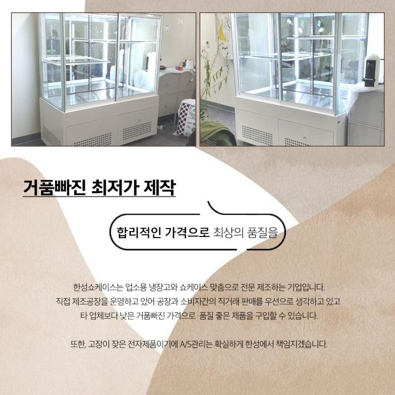

한성제품
편의점 냉장고, 가정용과 업소용 쇼케이스가 갈리는 지점

편의점 냉장고는 손님이 직접 문을 여닫는 횟수와 진열 상품 종류가 가정용과 비교할 수 없이 많아서, 냉각 회복이 빠르고 유리문 결로가 적은 업소용 쇼케이스가 맞습니다. 여기에 매장 벽면 길이와 뒤쪽 보충 동선에 맞춘 크기와 문 구성을 함께 정해야 합니다.
안녕하세요. 편의점과 마트의 유리문 냉장고를 매장에 맞춰 제작하는 한성쇼케이스입니다.
편의점 창업을 준비하는 사장님, 특히 본사 집기 없이 개인 편의점이나 소형 마트를 여시는 분들이 자주 물으십니다.
"양문형 큰 냉장고 몇 대 사다 놓으면 안 될까요?"
처음엔 그렇게 시작하는 매장도 있습니다. 하지만 편의점 냉장고는 손님이 하루 종일 문을 열고, 직원이 수시로 상품을 채우며, 음료부터 유제품, 도시락까지 온도에 예민한 상품이 한꺼번에 들어가는 장비입니다.
가정용으로는 금세 한계가 옵니다.
오늘은 편의점 냉장고를 고를 때 가정용과 업소용 쇼케이스가 어디서 갈리는지, 그리고 매장에 맞게 정해야 할 것들을 정리해 드리겠습니다.
1. 문을 여닫는 횟수가 다릅니다
가정용 냉장고는 하루 몇 번 문을 여는 것을 기준으로 만들어집니다. 편의점은 손님 한 명 한 명이 문을 열고 음료를 고르느라 머뭇거리고, 피크 시간에는 문이 닫힐 틈이 없습니다.
이럴 때 냉기가 빨리 회복되지 않으면 앞줄 음료부터 미지근해지고 손님 불만으로 이어집니다.
업소용 유리문 쇼케이스는 이런 사용을 전제로 냉각 용량과 팬 순환을 잡습니다. 문이 자동으로 닫히는 구조인지, 문을 놓았을 때 꼭 닫히는지도 매장에서는 중요한 기준입니다.
- 문을 놓으면 저절로 닫히는 구조인지 보세요.
- 피크 시간에도 앞줄 온도가 유지되는지 물어보세요.
2. 보이게 진열하는 구조
가정용 냉장고는 문이 불투명해 손님이 문을 열어야 안이 보입니다. 편의점은 손님이 유리문 밖에서 상품을 보고 고른 뒤 문을 여는 흐름이라, 전면 유리와 내부 조명이 판매에 직접 영향을 줍니다.
유리문은 매장 공기와 내부 온도 차이 때문에 김이 서리기 쉽습니다. 결로 방지 유리가 들어가는지, 조명이 선반마다 고르게 비추는지 확인하세요.
선반 각도와 가격표 레일도 상품을 앞으로 당겨 진열하기 편한 구조인지 함께 보시면 좋습니다.


3. 뒤에서 채우는지 앞에서 채우는지
대형 편의점은 냉장 창고 쪽에서 뒤로 상품을 밀어 넣는 워크인 방식을 쓰기도 하고, 소형 매장은 앞문을 열어 직접 채웁니다.
어느 방식이냐에 따라 냉장고 깊이와 설치 위치, 뒤쪽 공간 확보가 완전히 달라집니다.
앞에서 채우는 매장이라면 상품 박스를 들고 서 있을 공간이 냉장고 앞에 필요하고, 그 시간에는 손님 동선이 막힙니다.
보충 시간대와 손님 많은 시간대를 나눠 두는 운영 계획도 함께 세워 두세요.
- 상품 보충 방향(앞·뒤)을 먼저 정하세요.
- 보충할 때 박스를 둘 공간을 확보하세요.
4. 벽면 길이에 맞춘 크기
편의점은 냉장고가 벽 한 면을 길게 차지하는 경우가 많습니다. 기성품 여러 대를 나란히 붙이면 끝에 애매한 틈이 남거나 높이가 들쭉날쭉해 보이기 쉽습니다.
1인 창업처럼 매장 공간을 한 뼘이라도 더 써야 하는 경우라면 벽면 길이에 맞춰 도어 수와 폭을 정하는 편이 진열량을 늘리는 방법입니다.
매장 인테리어 색과 냉장고 프레임 색을 맞추면 작은 매장도 정돈된 인상을 줍니다. 냉장고 위쪽 공간을 간판이나 재고 보관 선반으로 쓸지도 미리 정해 두면, 천장까지의 높이를 버리지 않고 쓸 수 있습니다.
기계실 열이 빠질 위치와 전용 콘센트 자리도 벽면 계획에 함께 넣어 두세요.
체크리스트
- 문 자동 닫힘과 냉기 회복 속도
- 결로 방지 유리와 선반별 조명
- 상품 보충 방향과 뒤쪽 공간
- 벽면 길이에 맞춘 도어 수와 폭
- 프레임 색상과 매장 인테리어
현장에서 자주 보는 경우: 기성품 규격이 공간과 예산에 안 맞을 때
편의점 유리문 냉장고 상담에서 가장 많이 듣는 이야기는 기성품이 예산과 디자인, 사이즈 모두에서 조금씩 맞지 않는다는 것입니다.
특히 1인 창업자나 매장 공간을 최대한 쓰고 싶은 사장님일수록 이 문제를 크게 느끼십니다.
이런 매장은 공간과 디자인을 매장에 맞춰 제작하는 방향으로 진행했습니다. 직영 공장에서 제조와 판매를 함께 하기 때문에 유통 단계 없이 공장과 직거래로 진행할 수 있었고, 주문 후 제작되는 과정을 직접 보고 싶다는 사장님은 공장에 방문해 확인하시기도 했습니다.


자주 묻는 질문
가정용 양문형 냉장고로 편의점을 시작해도 되나요?
아주 작은 매장에서 임시로 쓸 수는 있지만, 손님이 문을 자주 여는 환경에서는 냉기 회복과 결로가 문제가 되기 쉽습니다.
오래 운영하실 계획이라면 업소용 유리문 쇼케이스를 권합니다.
벽 길이에 딱 맞게 냉장고를 만들 수 있나요?
벽면 실측 치수를 알려 주시면 도어 수와 폭을 그에 맞춰 정해 제작합니다. 반입 경로와 전원 위치도 함께 확인해 드립니다.
제작 과정을 직접 볼 수 있나요?
주문 후 제작 중인 제품을 공장에서 확인하실 수 있습니다. 방문 일정은 대표전화 031-986-2458로 미리 조율해 주세요.
매장 조건에 맞춰 만드는 한성쇼케이스
원하시는 제품 사진과 설치할 공간 사진만 보내 주셔도 매장에 맞는 구성을 추천해 드립니다.
- 전국 240여 개 A/S 전담 센터 운영
- 본사 대량 자재 매입으로 품질 대비 합리적인 가격
- 유럽제·삼성 냉각 콤프레셔 적용
- 국내 최초 쇼케이스 전문 디자이너 상주
매장 폭과 원하는 진열 구성을 알려 주세요. 실측과 견적을 안내해 드립니다.
031-986-2458